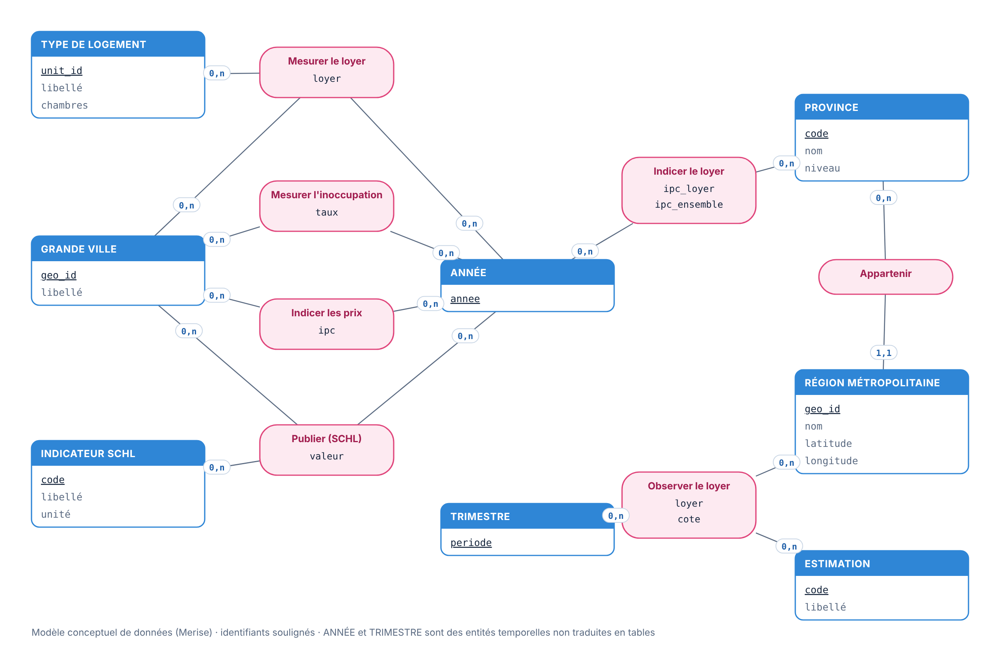
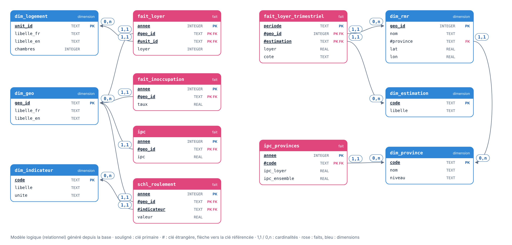

Compétence · SQL
Une base modélisée, 12 requêtes, zéro chiffre non vérifié
J'ai modélisé puis codé la base du projet en SQL : modèle conceptuel, modèle logique, 12 tables avec clés et contraintes et 5 vues analytiques. Chaque chiffre du site est recalculé en SQL et recoupé avec le classeur Excel : au moindre écart, la construction du site s'arrête.
- MCD / MLD (Merise)
- 3e forme normale
- Clés et contraintes CHECK
- Vues
- CTE (WITH)
- Fonctions de fenêtre (LAG, RANK)
- SQL Server
- PostgreSQL
- SQLite
Modélisation
Du modèle conceptuel à la base
J'ai modélisé les données avant de les coder : un modèle conceptuel (Merise) pour les objets et leurs liens, puis un modèle logique relationnel. Le modèle logique est dessiné à partir de la base elle-même, et le modèle conceptuel est confronté à la base à chaque construction : ils ne peuvent pas diverger du code.


Volumes : 306 loyers annuels, 298 loyers trimestriels (43 régions), 198 taux d'inoccupation, 111 valeurs d'IPC, 10 indicateurs SCHL.
Console : exécute les requêtes toi-même
SQLite tourne dans ton navigateur (sql.js). Choisis une requête, modifie-la ou écris la tienne, puis exécute-la. Raccourci : Ctrl+Entrée.
Les requêtes, une par une
Pour chaque requête : la question posée, les techniques utilisées, le code et le résultat.
Chaque requête porte son niveau : Débutant agrégats, jointures et règles de trois · Intermédiaire CTE, pivots, classements · Avancé fonctions de fenêtre (LAG, ROW_NUMBER, cadres ROWS).
Les scripts, par moteur
Chaque moteur a son dialecte : prendre la ligne du moteur utilisé, puis exécuter les deux fichiers dans l'ordre. Le fichier ① crée les tables et les vues et charge les données ; le fichier ② ne fonctionne qu'après, sur la même base. Les trois versions ont été exécutées sans erreur sur SQL Server 2022, PostgreSQL 16 et SQLite 3.
| Moteur | ① D'abord : la base (tables, vues, données) | ② Ensuite : les 12 requêtes |
|---|---|---|
| SQL Server 2016+ SSMS, Azure Data Studio | rents_database_sqlserver.sql · 46 Ko | rents_queries_sqlserver.sql · 11 Ko |
| PostgreSQL 12+ psql, pgAdmin, DBeaver | rents_database_postgres.sql · 43 Ko | rents_queries_postgres.sql · 11 Ko |
| SQLite 3.25+ DB Browser for SQLite, DBeaver | rents_database_sqlite.sql · 70 Ko | rents_queries_sqlite.sql · 12 Ko |
Mode d'emploi
- SQL Server 2016+ · dans SSMS ou Azure Data Studio, créer une base vide (
CREATE DATABASE loyers;) et la sélectionner à la place demaster; ① exécuterrents_(F5) ; ② ouvrirdatabase_ sqlserver.sql rents_sur la même base et l'exécuter.queries_ sqlserver.sql - PostgreSQL 12+ ·
createdb loyers; ①psql -d loyers -f rents_; ②database_ postgres.sql psql -d loyers -f rents_.queries_ postgres.sql - SQLite 3.25+ · ouvrir une base vide (DB Browser for SQLite, DBeaver ou un éditeur en ligne) ; ① exécuter
rents_; ② exécuterdatabase_ sqlite.sql rents_.queries_ sqlite.sql
Le fichier ① s'exécute une seule fois : relancé sur la même base, il s'arrête sur « la table existe déjà ». Lancer le fichier ② sans le ① donne « objet introuvable » (Invalid object name, no such table).